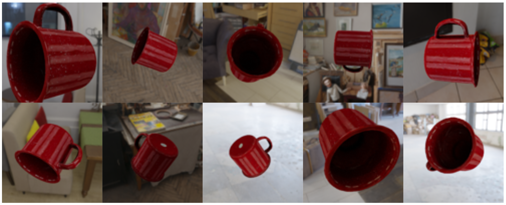

Getting started with 3DB¶
In this page, we’ll go through all the steps to run a 3DB experiment out-of-the-box.
Requirements¶
You will need a working Python 3.x installation. To follow the rest of this page, you will also need Anaconda.
Installation¶
To get started with 3DB, run the following command to install Blender and setup 3DB:
curl https://raw.githubusercontent.com/3db/installers/main/linux_x86_64.sh | bash /dev/stdin threedb
This creates a conda env that has threedb-preview, threedboard, and all other dependencies for 3DB.
Then, activate 3DB’s conda environment:
conda activate threedb
You are now ready to start running 3DB experiments!
Note
If you would like to contribute to 3DB, you can clone our repo and install it manually as follows:
git clone https://github.com/3db/3db
pip install 3db/
Run a simple experiment¶
Now we will demonstrate how, in only few minutes, you can setup an experiment and generate the following images of a cup rendered with random orientations on various backgrounds.
{kind=link}
Each 3DB experiment requires a BLENDER_DATA folder that contains two subfolders:
blender_models/, containing 3D models of objects (each 3D model is a.blendfile with a single object)
blender_environments/, containing environments (backgrounds) on which we will render the objects
For this simple experiment, we provide an example repository that contains all the 3D models and environments you need. Clone the example repository and navigate to that folder:
git clone https://github.com/3db/blog_demo
cd blog_demo
Then, update the BLENDER_DATA variable to point to the location of the 3D models and environments. In our case, set it as follows:
export BLENDER_DATA=data/backgrounds
Note
- There are three available experiments in
blog_demo: backgrounds: renders a 3D models on various backgrounds.texture_swap: renders a 3D model with various textures.part_of_object: renders a 3D model in various poses, then creates an attribution heatmap.
Here, we focus on the backgrounds experiment. Refer to this README for steps on how to run the other experiments.
Next, define the output directory where 3DB will output the results.
export RESULTS_FOLDER=results
The next step is to tell 3DB what configurations of 3D objects to render, how to evaluate the rendered images, and what data to log.
These should all be specified inside a YAML configuration file.
Here, we provide example YAML files, which are also in the same example repository that you already cloned. Later on we will walk you through how to write your own configuration files.
inference:
module: 'torchvision.models'
label_map: '/path/to/3db/resources/imagenet_mapping.json'
class: 'resnet18'
normalization:
mean: [0.485, 0.456, 0.406]
std: [0.229, 0.224, 0.225]
resolution: [224, 224]
args:
pretrained: True
evaluation:
module: 'threedb.evaluators.classification'
args:
classmap_path: '/path/to/3db/resources/ycb_to_IN.json'
topk: 1
render_args:
engine: 'threedb.rendering.render_blender'
resolution: 256
samples: 16
policy:
module: "threedb.policies.random_search"
samples: 100
logging:
logger_modules:
- "threedb.result_logging.image_logger"
- "threedb.result_logging.json_logger"
base_config: "base.yaml"
policy:
module: "threedb.policies.random_search"
samples: 20
controls:
module: "threedb.controls.blender.orientation"
module: "threedb.controls.blender.camera"
zoom_factor: [0.7, 1.3]
aperture: 8.
focal_length: 50.
module: "threedb.controls.blender.denoiser"
base_config: "base.yaml"
controls:
module: "threedb.controls.blender.orientation"
rotation_x: -1.57
rotation_y: 0.
rotation_z: [-3.14, 3.14]
module: "threedb.controls.blender.position"
offset_x: 0.
offset_y: 0.5
offset_z: 0.
module: "threedb.controls.blender.pin_to_ground"
z_ground: 0.25
module: "threedb.controls.blender.camera"
zoom_factor: [0.7, 1.3]
view_point_x: 1.
view_point_y: 1.
view_point_z: [0., 1.]
aperture: 8.
focal_length: 50.
module: "threedb.controls.blender.material"
replacement_material: ["cow.blend", "elephant.blend", "zebra.blend", "crocodile.blend", "keep_original"]
module: "threedb.controls.blender.denoiser"
base_config: "base.yaml"
render_args:
engine: 'threedb.rendering.render_blender'
resolution: 256
samples: 16
with_uv: True
controls:
module: "threedb.controls.blender.orientation"
rotation_x: -1.57
rotation_y: 0.
rotation_z: [-3.14, 3.14]
module: "threedb.controls.blender.camera"
zoom_factor: [0.7, 1.3]
view_point_x: 1.
view_point_y: 1.
view_point_z: 1.
aperture: 8.
focal_length: 50.
module: "threedb.controls.blender.denoiser"
module: "threedb.controls.blender.background"
H: 1.
S: 0.
V: 1.
The first file, base.yaml, contains common configurations that are used by the three other YAML files.
Each of the other YAML files corresponds to one of the aformentioned experiments.
We will use the backgrounds.yaml already present in the example repository.
You are now ready to run 3DB!
Running the master node¶
First, run the master node, which schedules the rendering tasks (for clients). This will keep running until all the rendering tasks are complete. No rendering will start before you run at least one client (as we will show you below).
# Run the following command to spawn the master node, then go to the next section to (concurrently) run the clients.
threedb_master $BLENDER_DATA backgrounds.yaml $RESULTS_FOLDER 5555
Running the clients¶
In a separate terminal window, run the client, which performs the rendering.
To do so, make sure that 3DB’s conda environment is activated and that the BLENDER_DATA variable is properly set.
conda activate threedb
cd blog_demo
export BLENDER_DATA=data/backgrounds
Then run 1 client (you can run multiple clients in parallel to speed up the rendering) using the following line of code:
threedb_workers 1 $BLENDER_DATA 5555
Running the dashboard¶
A few seconds later, you will have your first results in results/! You can explore the results in a web interface by installing and running our threedb dashboard (threedboard):
python -m threedboard $RESULTS_FOLDER
This page will display the results via threedboard. Below are examples of rendered images that you will see in the dashboard!
{kind=link}
Analyzing the results¶
You can also read the .json log file in $RESULTS_FOLDER into pandas, and analyze the results.
For example, you can run the following python script, which is also in the demo repository:
import pandas as pd
import numpy as np
import json
with open('results/details.log') as file_pointer:
log_lines = file_pointer.readlines()
with open('results/class_maps.json') as file_pointer:
class_map = json.load(file_pointer)
df = pd.DataFrame.from_records(list(map(json.loads, log_lines)))
df['prediction'] = df['prediction'].apply(lambda x: class_map[x[0]])
df['is_correct'] = (df['is_correct'] == 'True')
res = df.groupby('environment').agg(accuracy=('is_correct', 'mean'),
most_frequent_prediction=('prediction', lambda x: x.mode()))
print(res)
Congratulations! You have successfully completed your first 3DB experiment!
Next, we’ll break down how to write your own configuration files, and other ways to view your results. For advanced users, the Customizing 3DB section of this documentation will help you customize and exploit the modularity of 3DB.